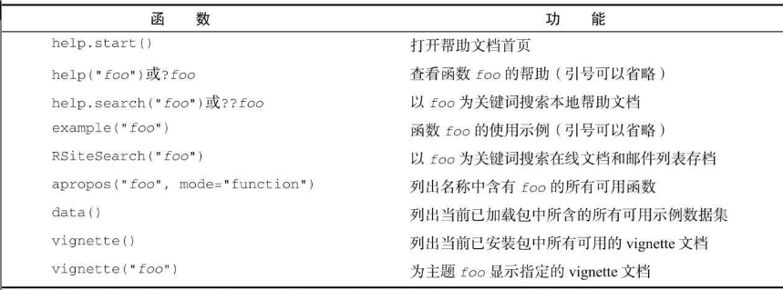
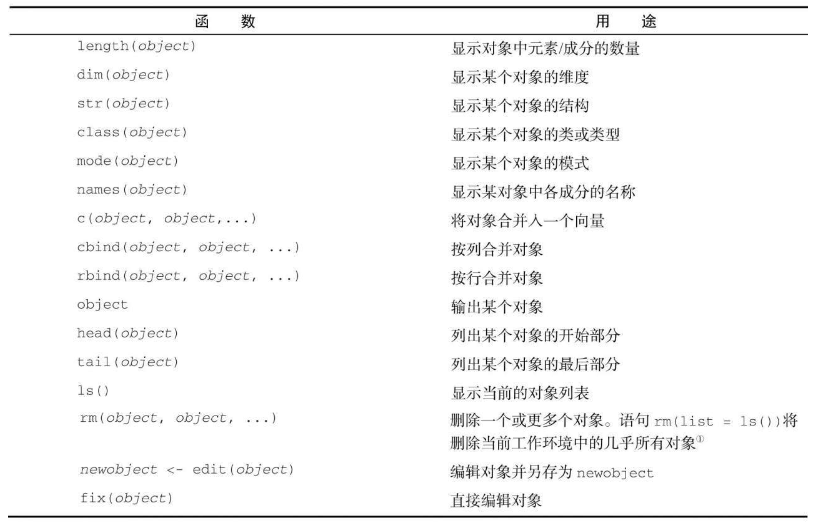

入门
获取帮助

工作空间

示例： 1
2
3
4
5
6
7setwd("C:/myprojects/project1")
options()
options(digits=3) # 三位数字
x <- runif(20) # 20个均匀分布
summary(x)
hist(x) # 直方图
q()
输入和输出
输入
source("filename")可在当前会话中执行一个脚本。
文本输出
sink("filename")将输出重定向到文件中，默认覆盖。 append=TRUE可将文本追加到文件后 split=TRUE可将输出同时发送到屏幕和输出文件中
图形输出
示例
1 | source("script1.R") |
结果重用
1 | lm(mpg~wt, data=mtcars, data=mtcarts) |
创建数据集
数据集通常是由数据构成的一个矩形数组，行表示观测，列表示变量。
不同的行业对于数据集的行和列叫法不同。统计学家称它们为观测（observation）和变量（variable），数据库分析师则称其为记录（record）和字段（field），数据挖掘和机器学习学科的研究者则把它们叫作示例（example）和属性（attribute）
数据结构

向量
1 | # 单个向量中的数据必须拥有相同的类型或模式 |
标量是只含一个元素的向量， 如
f <- 3
1 | > a <- c(5:20) # 创建5-20的数组 |
R语言中索引从1开始，不同于一般编程语言的从0开始
矩阵
矩阵是一个二维数组，只是每个元素都拥有相同的模式（数值型、字符型或逻辑型）
1 | y <- matrix(1: 20, nrow = 5, ncol = 4) |
数组
数组array与矩阵类似，但是维度可以大于2 1
myarray <- array(*vector, *dimensions, dimnames)
1 | > dim1 <- c("a1", "a2") |
数据框
1 | mydata <- data.frame(col1, col2, col3, ...) |
1 | > patientID <- c(1, 2, 3, 4) |
attach(), detach() and with()
在每个变量名前都键入一次patientdata$可能会让人生厌，所以不妨走一些捷径。可以联合使用函数attach()和detach()或单独使用函数with()来简化代码。
1 | summary(mtcarts$mpg) |
以上代码可以写成 1
2
3
4
5atach(mtcars)
summary(mpg)
plot(mpg, disp)
plot(mpg, wt)
detach(mtcars)
当对象名称不止一个时，这种方法有局限性，可能会与已存在变量冲突 另一种方式是使用函数with() 1
2
3
4
5with(mtcars, {
print(summary(mpg))
plot(mpg, disp)
plot(mpg, wt)
})
如果需要创建在with() 结构以外存在的对象，使用特殊赋值符<<-替代<- 1
2
3
4with(mtcars, {
nokeepstats <- summary(mpg)
keepstats <<- summary(mpg)
})
实例标识符
实例标识符可以通过rowname选项指定 1
patientdata <- data.frame(patientID, age, diabetes, status, row.names = patientID)
因子factor
类别变量和有序类别变量在R中称为因子(factor)
字符型变量 1
2
3
4
5
6
7
8
9
10
11
12
13
14
15
16> diabetes
[1] "type1" "type2" "type1" "type1"
> diabetes <- factor(diabetes) # 无序型
> diabetes
[1] type1 type2 type1 type1
Levels: type1 type2
> status
[1] "poor" "improved" "excellent" "poor"
# 有序型
status <- factor(status, ordered = TRUE,
level = c("poor", "improved", "excellent")
> status
[1] poor improved excellent poor
Levels: poor < improved < excellent
>
数值型变量可以用levels和labels参数来编码成因子。 1
sex <- factor(sex, levels = c(1, 2), labels = c("male", "female"))
列表list
列表允许你整合若干（可能无关的）对象到单个对象名下。 1
mylist <- list(name1 = obj1, name2 = obj2, ...)
数据的输入
键盘输入
edit()可以打开一个临时的编辑器
可以直接嵌入数据集： 1
2
3
4
5
6
7
8
9
10
11
12> mydatatxt <- "
+ age gender weight
+ 25 m 166
+ 30 f 115
+ 18 f 120
+ "
> mydata <- read.table(header=TRUE, text=mydatatxt)
> mydata
age gender weight
1 25 m 166
2 30 f 115
3 18 f 120
从带分隔符的文本文件导入数据
1 | mydataframe <- read.table(file, options) |
默认地，read.table() 把字符变量转化为因子，这并不一定都是我们想要的情况。可以加上 stringsAsFactors=FALSE 对所有的字符变量去掉这个行为。 此外，可以用 colClasses 选项对每一列都指定一个类 1
2
3
4grades <- read.table("studentgrades.csv", header=TRUE,
row.names="StudentID", sep=",",
colClasses=c("character", "character", "character",
"numeric", "numeric", "numeric"))
导入excel数据
1 | library(xlsx) |
其他的包：XLConnect(依赖于JAVA), openxlsx
导入XML数据
XML包
从网页抓取数据
网页上的文字可以使用函数 readLines() 来下载到一个R的字符向量中，然后使用如 grep() 和 gsub() 一类的函数处理它。对于结构复杂的网页，可以使用RCurl包和XML包来提取信息。 twitteR来获取Twitter数据， Rfacebook来获取Facebook数据…… CRAN Web Views 中查看全面列表
导入SPSS数据
1 | install.packages("Hmisc") |
导入Stata数据
1 | library(foreign) |
数据集的标注
这种标注包括为变量名添加描述性的标签，以及为类型变量中的编码添加值标签
变量标签
只能修改变量名（不好用） 1
namesJ(patientdata)[2] <- "Age at hospitalization (in years)"
值标签
假设有一个名为gender的变量，其中1表示男性，2表示女性，可以使用： 1
2
3patientdata$gender <- factor(patientdata$gender,
levels=c(1, 2)
labels=c("male", "female"))
处理数据对象的实用函数

图形初阶
简单例子
1 | dose <- c(20, 30, 40, 45, 60) |